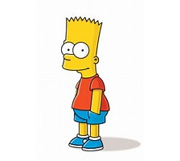

Bart Simpson
Bartholomew “Bart” Simpson on 10‑vuotias keppostelija, joka rakastaa skeittausta, pränkkipuheluita ja ongelmiin joutumista. Hän on koulun pahamaineinen häirikkö, mutta samalla nokkela ja yllättävän lojaali perheelleen ja ystävilleen.
Ääninäyttelijä

Ääniklippit
